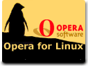
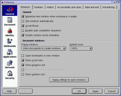
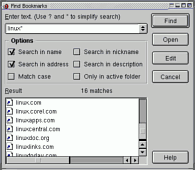

![[Photo of the Author]](opera5.files/Georges-Tarbouriech.jpg)
автор Georges Tarbouriech
Об авторе:
Georges давно работает с Unix системами. Ему надоели прожорливые
браузеры и он подыскивает более компактные
варианты.
Содержание:
|
Singing in the web

Резюме:
В предыдущей заметке я сказал, что Opera еще не выглядела убедительно для
меня в то время. Но выход новой версии (5.0) для Linux немного изменил мое
мнение на этот счет и теперь я хочу предложить вашему вниманию небольшую
заметку, посвященную этому браузеру. Opera доступна бесплатно на сайте http://www.opera.com/
Джунгли браузеров
Прошло примерно 10 лет с тех пор как появился первый графический браузер -
Mosaic. Это был настоящий переворот - начался новый этап исследования веб. Это
было нечто другое, отличное от того, чем мы пользовались в то время для
подключения к ББСкам. Эти программы были очень компактными, но могли отображать
цветные картинки, разноцветно подсвечивать текст... Немного позже появился "сын"
- и назвали его Netscape. Конечно он уже стал немного объемней и позже стал
использоваться во многих Unix системах. Потом появилась версия для Windos, что
послужило толчком для написания собственного браузера M$. Так появился Internet
Exploder. И началась борьба за превосходство между Netscape и IE. В то же время
шли работы над созданием графических браузеров для таких систем как Amiga OS,
NeXTstep (самый первый был для NeXTstep и назывался WorldWideWeb - просто факт)
и позже BeOS. Работы были довольно успешными - созданные браузеры были
компактны, но, в то же время, обладали возможностями этих двух. Перечислим
некоторые - AWeb, IBrowse, Voyager для Amiga OS, OmniWeb для NeXTstep или
NetPositive для BeOS. И еще один замечательный браузер - Voyager для QNX 4 RTOS.
К сожалению нет возможности перечислить их все.
Если вам интересна подробная
история браузеров - читайте http://www.w3.org/History.html.
Тем
временем процессоры становились мощнее, количество оперативной памяти и емкости
жестких дисков увеличивались. Соответственно превращались в "фабрики"
приложения, которые мы называем сегодня веб браузерами. Не будем говорить о
результатах борьбы между Netscape и IE. Просто скажем - сегодня браузер - это
приложение размером 15 MB, не считая библиотек, встраиваемых модулей и т.д. Это
настоящие монстры! Нам интересно - а есть ли альтернатива? Думаю, что на самом
деле выбор не богат, тем более, что большинство опирается на те же библиотеки
Netscape (или Mozilla). Это значит, что если сам браузер достаточно компактен,
он все равно требует наличия данных библиотек и в конце концов получается
примерно то же самое. Многие такие приложения до сих пор запускаются на 200 Mhz
процессорах и 32 MB памяти - что не радует пользователей. Вот здесь и появляется
Opera - альтернатива для ОС Linux.
Где взять?
Opera - скандинавская компания, расположенная в Норвегии. Скандинавы -
большие новаторы - достаточно вспомнить некоторые программные продукты,
созданные ими - ssh, (коммерческая версия), из
Финляндии или, одно из величайших приложений на все времена - Scala - мультимедийное приложение, созданное в
Норвегии в 1987г. С его помощью можно было создавать невероятные мультимедийные
презентации на платформе Amiga задолго до других ОС. Не мог не сказать об
этом!
Самая свежая версия(5.0) Opera для Linux доступна на сайте http://www.opera.com/ в виде пакетов rpm, deb
или в виде tar.gz. Этот браузер на основе библиотеки Qt и соответственно
придется выбрать вариант со статической или динамической поддержкой. Выбор
динамически скомпилированной поддержки библиотеки подразумевает наличие ее в
системе. Не будем говорить об инсталляции браузера - она очевидна.
Одно из
главных отличий состоит в том, что настоящая версия доступна бесплатно, никаких
30-ти дневных пробных версий - единственная плата - просмотр баннеров в верхней
части рабочего окна браузера. Если такой вариант вам не подходит - можете
зарегистрировать это приложение за 39$.
Для информации - Opera доступна для
Windos, BeOS, Mac и EPOC. Версия для OS2 находится в стадии разработки. Что
касается Linux - существуют версии для i386, SPARC или PPC.
Вне всякого
сомнения - мы будем говорить о Linux версии. Кстати, мы не протестировали версии
для BeOS и Windos.
Используем Opera
Как и всякий графический браузер - Opera прост в использовании. Не надо
тратить много времени чтобы разобраться как он работает и благодаря широкому
выбору настроек - очень гибко конфигурируем.
 |
| Окно настроек в Opera 5.0 |
Выбор настроек
настолько широк, что надо потратить немного времени на поиск нужной - например,
на мой взгяд, настройка шрифтов немного сложновата.
Среди возможностей
можно отметить выпадающее меню истории - небольшая стрелка рядом с кнопками
"предыдущее" и "следующее" - нажатие на нее выводит список страниц, посещенных в
текущей сессии. Что-то подобное было возможно и в Netscape. Также есть и
глобальная история через меню. Неплохая возможность!
Также интересна
возможность вкл/выкл загрузки изображений через кнопку, расположенную рядом с
полем для ввода адреса. У Netscape также есть такая возможность, но где-то
глубоко в меню. И в отличие от Netscape - загрузка изображений с задержкой
действительно работает - эта возможность значительно ускоряет навигацию - вы
перебираете страницы до нужной и найдя ее загружаете изображения.
 |
| Поиск закладок |
Неплохую возможность
предоставляет функция "Find bookmarks" - поиск с помощью шаблонов (wild card) в
закладках.
Еще одна интересная возможность - проверка на корректность
HTML кода. Нажатие правой кнопкой на HTML документе переноит вас в World Wide
Web Consortium и соответствующий сервис сообщает - корректен HTML код или нет.
Это очень полезно при создании сайта. Если бы все браузеры имели такую
возможность - скорее всего все сайты, которые не открываются, исчезли
бы!!!
Этот вопрос заслуживает большего внимания, но к сожалению находится
за рамками данной заметки. Появляется все больше и больше сайтов не следующих
рекомендациям w3c. Еще хуже - каждый браузер ведет себя по-своему. И в
результате - сможете вы или нет открыть сайт напрямую зависит от используемого
вами браузера. Глупо, не правда ли?
Еще раз обращаюсь к
"профессиональным" интернет-разработчикам - не используйте нестандартные,
частные решения. Прекратите использовать Java, особенно когда в этом нет
совершенно никакой необходимости. Не используйте так называемые "приложения" для
создания HTML кода - это уже явно не HTML! Из созданных подобным образом
документов можно спокойно выбросить 50% всякого мусора (не буду конкретизировать
- надеюсь вы догадываетесь о ком идет речь...). Это вообщем первая часть
проблемы.
Вторая часть касается самих браузеров. Например: Netscape 6.0
для Linux понимает код не так как другие версии Netscape. Мы не говорим об
Exploder. Что я имею в виду: некоторый HTML код понимает Netscape 6.0, а другие
браузеры - нет: то, что вы видите на экране не совпадает с тем, что вы
ожидали!
Еще одна проблема с Netscape 6.0 для Linux состоит во взаимодействии
этого браузера с локальным Apache без DNS - требуется много времени чтобы он
нашел этот сервер, но в отличие от предыдущей версии - хоть находит. С Opera
такой проблемы я не наблюдал.
На самом деле выбор то есть, не все
используют Netscrape или Exploder - есть много других ОС и браузеров. Но, если
создатели сайтов по-прежнему будут игнорировать рекомендации w3c - вскоре многие
сайты вообще будут недоступны. Специально это делается или нет - сами найдите
ответ на этот вопрос...
Я знаю, что уже говорил об этом, но хочу непременно
настоять. В нашем журнале - LinuxFocus - мы делаем много, чтобы любой браузер
корректно воспринимал сайт. И это должен делать каждый. Но это только мое личное
мнение.
Извините, что отошел немного от темы, это довольно часто бывает в
моих заметках - просто, чтобы не стало скучно:-)
Возвратимся к Opera.
С Opera 5.0 для Linux доступны некоторые сайты, не доступные Netscape 4.77
для Linux (например). Удивлены, не так ли?
Но не все так хорошо -
существуют проблемы с CGI скриптами, в то время как Netscape и многие другие не
испытывают таких проблем - каждый браузер работает по-своему. Для разделения
multipart form-data encodings Netscape и MS IE используют что-то типа
этого:
-----------------------------2564311134412
Со случайным номером.
Те CGI скрипты, которые написаны для обработки в таком формате - не будут
работать с Opera. Потому что в Opera используется немного другой синтаксис,
отличный от других браузеров. Opera использует что-то типа такого
разделителя:
--_OPERAB__-tRjeTHZvhMcr8tfsjpfOeE
Возможно это стандарт,
однако необязательные различия усложняют вещи. Ничего нового Opera здесь не
вносит, дело в другом - мы могли бы сказать, что дело в плохо написанном
скрипте, но это не всегда так, например сама Opera не способна послать большие
multipart form-data. И это кажется действительной ошибкой. Все замирает в
середине передачи и пользователь ждет когда же загрузиться эта страница.
Еще
один момент: один и тот же браузер по-разному работает на разных платформах, что
вообщем-то очевидно, но многие забывают об этом.
Opera также обладает
возможностью выдавать себя за IE или Mozilla, но это не решает вышеперечисленных
проблем.
Еще немного характеристик - Opera HTML 4.01, XML 1.0 и XHTML 1.0
совместима. Также поддерживает CSS (Cascadind Style Sheet) уровней 1 и 2.
Неплохо да! Но к сожалению этого не достаточно - Opera не безупречна, но в то же
время это можно сказать и о других браузерах тоже.
Opera ведет себя примерно
как OmniWeb для MacOS X (если кто знает). Требуется немного больше времени для
качественного изображения - после загрузки происходит подстройка, как у любого
браузера, но кажется немного дольше, чем у других, по крайней мере на слабых
компьютерах. Ну а вообще Opera - достаточно быстрый браузер. Не могу сказать
самый быстрый (не работаю на Opera), но один из быстрых.
Как выглядит Opera?
Вот так:
Как видите - ничего необычного, но есть
широкие возможности поменять внешний вид. Например Hotlist можно расположить
слева. Также можно убрать window bar и bookmark bar - все настраивается.
Если посмотреть логи локального http сервера можно увидеть, что Opera
открывает одновременно несколько соединений. Этим наверное можно объяснить время
подстройки - Opera скачивает все сразу и потом улучшает качество отображения.
Спасибо Floris - это он обратил мое внимание на это.
Может это достаточно
субъективно, но создается впечатление, что Opera очень быстро обращается к базам
данных. Но это только впечатление, так как я специально ничего не тестировал.
Еще раз - это все конечно надо проверить на слабом компьютере. Использование
мощных компьютеров не позволяет сделать реальные выводы.
Opera предоставляет
массу закладок - можете делать с ними что хотите. Лично я первым делом,
установив новый браузер, удаляю все закладки!
Еще один положительный момент -
помощь online - достаточно подробная, хорошо структурированная и доступна
локально, не на их сайте.
Пару слов скажем о меню - тут также несколько
удобных возможностей - например предварительный просмотр для печати, еще -
обновление страницы каждые х минут - просто выбираете пункт меню и определяете
время обновления.
В Opera полно таких возможностей - мелочь, а
приятно.
Еще одно интересное место - окно передачи данных. При загрузке файла
нажатие на его пиктограмме выводит меню - можно выбрать продолжение закачки,
отмену - очень полезное меню.
Об этом приложении можно говорить и говорить,
но лучший путь знакомства - личное тестирование!
Что дальше
Появление такого браузера как Opera очень полезно - появляется уверенность,
что и с помощью таких компактных приложений можно исследовать веб - совершенно
не нужны эти 40 MB библиотек и т.д. К сожалению не многие об этом знают. В
принципе это касается любого приложения, не обязательно только браузеров.
Но
достаточно ли этого, чтобы изменить что-то в ближайшем будущем?
Интересно
также - сколько еще времени мы будем использовать браузеры таким образом, как мы
их сейчас используем?
Например, советую обратить внимание на возможности Rebol, если вы не знакомы с этим направлением -
смотрите здесь.
Со времени написания заметки - Rebol еще дальше пошел в области распределенных
приложений. Не это ли следующий этап использования Интернет? Задачи, которые
решает Rebol как раз подтверждают это - нет необходимости больше в браузерах и
следующим этапом будет распределенная работа.
Это не значит, что браузеры
исчезнут, я просто надеюсь, что им порекомендуют диету...
В связи с этим
можно предположить, что Opera на верном пути. Последние новости только
подтверждают это - Opera заключила договор с Symbian о мобильных Интернет
устройствах. Это значит, что компактные браузеры найдут более широкое
применение...
Заключение
Ничто не идеалено... даже Opera. Но это достаточно интересное событие -
нравится вам или нет - вам решать - все зависит от ваших потребностей. Менять
что-то работающее не каждый любит. Но тем не менее - уделите ваше внимание этому
браузеру, протестируйте его. Тем более, что для Linux выбор графических
браузеров не настолько широк (или даже если сказать точнее - все они являются
примерно одним и тем же). теперь у вас есть шанс почувствовать разницу.
Кроме
того - компания показала способность быстрого улучшения своего продукта. можем
ожидать улучшений и дальше.
Итак, если вам надоели эти "глючные фабрики" для
путешествий в веб - посетите http://www.opera.com/ и попробуйте браузер этой
компании для Linux.
Мы живем в великие времена - не правда ли?
Перевод: Kirill Poukhliakov
{kind=link}